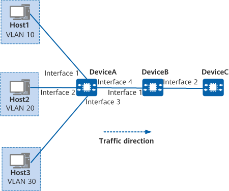

Example for Configuring MQC-based Traffic Policing
Networking Requirements
In Figure 1, packets sent by Host1, Host2, and Host3 traverse DeviceA, DeviceB, and DeviceC to reach the external network. Interface 1 (connected to Host1), interface 2 (connected to Host2), and interface 3 (connected to Host3) join VLAN 10, VLAN 20, and VLAN 30, respectively.

In this example, interface 1, interface 2, interface 3, and interface 4 represent 10GE 0/0/1, 10GE 0/0/2, 10GE 0/0/3, and 10GE 0/0/4, respectively.

The rates of traffic from tenants must be limited within proper ranges on DeviceB. Table 1 lists the required CIR values for uplink traffic from tenants.
Procedure
- Create VLANs and configure interfaces so that hosts can access the network through DeviceB.
# Create VLANs 10, 20, and 30 on DeviceA and add interfaces to the corresponding VLANs.
<HUAWEI> system-view [HUAWEI] sysname DeviceA [DeviceA] vlan batch 10 20 30 [DeviceA] interface 10ge 0/0/1 [DeviceA-10GE0/0/1] portswitch [DeviceA-10GE0/0/1] port link-type access [DeviceA-10GE0/0/1] port default vlan 10 [DeviceA-10GE0/0/1] quit [DeviceA] interface 10ge 0/0/2 [DeviceA-10GE0/0/2] portswitch [DeviceA-10GE0/0/2] port link-type access [DeviceA-10GE0/0/2] port default vlan 20 [DeviceA-10GE0/0/2] quit [DeviceA] interface 10ge 0/0/3 [DeviceA-10GE0/0/3] portswitch [DeviceA-10GE0/0/3] port link-type access [DeviceA-10GE0/0/3] port default vlan 30 [DeviceA-10GE0/0/3] quit [DeviceA] interface 10ge 0/0/4 [DeviceA-10GE0/0/4] portswitch [DeviceA-10GE0/0/4] port link-type trunk [DeviceA-10GE0/0/4] port trunk allow-pass vlan 10 20 30 [DeviceA-10GE0/0/4] quit
# Create VLANs 10, 20, and 30 on DeviceB and add 10GE 0/0/1 to the VLANs.
<HUAWEI> system-view [HUAWEI] sysname DeviceB [DeviceB] vlan batch 10 20 30 [DeviceB] interface 10ge 0/0/1 [DeviceB-10GE0/0/1] portswitch [DeviceB-10GE0/0/1] port link-type trunk [DeviceB-10GE0/0/1] port trunk allow-pass vlan 10 20 30 [DeviceB-10GE0/0/1] quit
- Configure traffic classifiers.
# On DeviceB, configure traffic classifiers c1, c2, and c3 to match service flows from different hosts based on VLAN IDs.
[DeviceB] traffic classifier c1 [DeviceB-classifier-c1] if-match vlan 10 [DeviceB-classifier-c1] quit [DeviceB] traffic classifier c2 [DeviceB-classifier-c2] if-match vlan 20 [DeviceB-classifier-c2] quit [DeviceB] traffic classifier c3 [DeviceB-classifier-c3] if-match vlan 30 [DeviceB-classifier-c3] quit
- Configure traffic behaviors and define traffic policing.
# On DeviceB, create traffic behaviors b1, b2, and b3 to police packets from different hosts.
[DeviceB] traffic behavior b1 [DeviceB-behavior-b1] car cir 2000 [DeviceB-behavior-b1] statistics enable [DeviceB-behavior-b1] quit [DeviceB] traffic behavior b2 [DeviceB-behavior-b2] car cir 4000 [DeviceB-behavior-b2] statistics enable [DeviceB-behavior-b2] quit [DeviceB] traffic behavior b3 [DeviceB-behavior-b3] car cir 8000 [DeviceB-behavior-b3] statistics enable [DeviceB-behavior-b3] quit
- Configure a traffic policy and apply it to an inbound interface.
# On DeviceB, create traffic policy p1, bind configured traffic behaviors and traffic classifiers to this traffic policy, and apply the traffic policy to the inbound direction of 10GE 0/0/1 to police packets from hosts.
[DeviceB] traffic policy p1 [DeviceB-trafficpolicy-p1] classifier c1 behavior b1 [DeviceB-trafficpolicy-p1] classifier c2 behavior b2 [DeviceB-trafficpolicy-p1] classifier c3 behavior b3 [DeviceB-trafficpolicy-p1] quit [DeviceB] interface 10ge 0/0/1 [DeviceB-10GE0/0/1] traffic-policy p1 inbound [DeviceB-10GE0/0/1] quit
Verifying the Configuration
After the configuration is complete, check the traffic policing configuration on DeviceB.
# Check the traffic classifier configuration.
[DeviceB] display traffic classifier
Traffic Classifier Information:
Classifier: c1
Type: OR
Rule(s):
if-match vlan 10
Classifier: c2
Type: OR
Rule(s):
if-match vlan 20
Classifier: c3
Type: OR
Rule(s):
if-match vlan 30
Total classifier number is 3
# Check the traffic policy configuration.
[DeviceB] display traffic policy p1
Traffic Policy Information:
Policy: p1
Classifier: c1
Type: OR
Behavior: b1
Committed Access Rate:
CIR 2000 (Kbps), PIR 2000 (Kbps), CBS 16000 (Bytes), PBS 16000 (Bytes)
Color Mode: color blind
Conform Action: pass
Yellow Action: pass
Exceed Action: discard
Statistics: enable
Classifier: c2
Type: OR
Behavior: b2
Committed Access Rate:
CIR 4000 (Kbps), PIR 4000 (Kbps), CBS 32000 (Bytes), PBS 32000 (Bytes)
Color Mode: color blind
Conform Action: pass
Yellow Action: pass
Exceed Action: discard
Statistics: enable
Classifier: c3
Type: OR
Behavior: b3
Committed Access Rate:
CIR 8000 (Kbps), PIR 8000 (Kbps), CBS 64000 (Bytes), PBS 64000 (Bytes)
Color Mode: color blind
Conform Action: pass
Yellow Action: pass
Exceed Action: discard
Statistics: enable
# Check statistics about the traffic policy applied to 10GE 0/0/1.
[DeviceB] display traffic-policy statistics interface 10ge 0/0/1 inbound Traffic policy: p1, inbound -------------------------------------------------------------------------------- Slot: 0 Item Packets Bytes pps bps ------------------------------------------------------------------------------- Matched 363949175 46585494400 8460795 8663854896 Passed 363949175 46585494400 8460795 8663854896 Dropped 0 0 0 0 Filter 0 0 0 0 CAR 0 0 0 0 Car 0 0 0 0 Green 0 0 0 0 Yellow 0 0 0 0 Red 0 0 0 0 -------------------------------------------------------------------------------
The preceding command output shows that the traffic policy p1 is applied to 10GE 0/0/1.
Configuration Scripts
-
# sysname DeviceB # vlan batch 10 20 30 # traffic classifier c1 type or if-match vlan 10 # traffic classifier c2 type or if-match vlan 20 # traffic classifier c3 type or if-match vlan 30 # traffic behavior b1 statistics enable car cir 2000 kbps # traffic behavior b2 statistics enable car cir 4000 kbps # traffic behavior b3 statistics enable car cir 8000 kbps # traffic policy p1 classifier c1 behavior b1 precedence 5 classifier c2 behavior b2 precedence 10 classifier c3 behavior b3 precedence 15 # interface 10GE0/0/1 portswitch port link-type trunk port trunk allow-pass vlan 10 20 30 traffic-policy p1 inbound # return
-
# sysname DeviceA # vlan batch 10 20 30 # interface 10GE0/0/1 portswitch port link-type access port default vlan 10 # interface 10GE0/0/2 portswitch port link-type access port default vlan 20 # interface 10GE0/0/3 portswitch port link-type access port default vlan 30 # interface 10GE0/0/4 portswitch port link-type trunk port trunk allow-pass vlan 10 20 30 # return